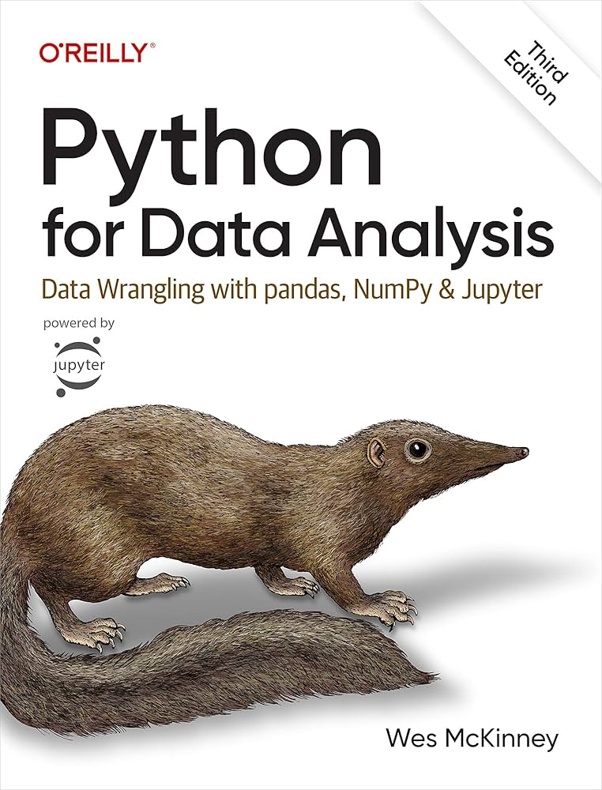

Tidy Data
IN2039: Data Visualization for Decision Making
Department of Industrial Engineering
Agenda
- Tidy Data
- pandas for Tidy data
- Data Wrangling
Load the libraries
Remember to load the Python libraries into Google Colab before we start:
Tidy Data
Data science workflow

- Every data science project involves importing, tidying, transforming, visualizing, modeling, and communicating data.
- Import: Bring raw data into Python.
- Tidy: Reshape into a consistent format.
- Transform: Create new variables and summaries.
- Visualize: Explore patterns visually.
- Model: Fit statistical or machine learning models.
- Communicate: Share insights clearly.
- Import: Bring raw data into Python. (pandas)
- Tidy: Reshape into a consistent format. (pandas)
- Transform: Create new variables and summaries. (pandas)
- Visualize: Explore patterns visually.
- Model: Fit statistical or machine learning models.
- Communicate: Share insights clearly.
Why do we need tidy data?
“Tidy datasets are easy to manipulate, model, and visualize.” — Hadley Wickham
- Tidy data make Python tools work together smoothly.
- Each tidy dataset is like a well-organized spreadsheet.
- Making your data tidy allows you to avoid common errors that occurred in the data analysis.
- The pandas package has functions to make your data tidy.
Tidy Data
In tidy data:
- Each variable is in a column
- Each observation is in a row
- Each cell is a single measurement.


Example 1
Consider four datasets with the same values of four variables country, year, population, and cases. First, this is tidy version.
| country | year | cases | population | |
|---|---|---|---|---|
| 0 | Afghanistan | 1999 | 745 | 19987071 |
| 1 | Afghanistan | 2000 | 2666 | 20595360 |
| 2 | Brazil | 1999 | 37737 | 172006362 |
| 3 | Brazil | 2000 | 80488 | 174504898 |
| 4 | China | 1999 | 212258 | 1272915272 |
| 5 | China | 2000 | 213766 | 1280428583 |
This is tidy data because each variable is in a column , each observation is in a row, and each cell is a single measurement.
| country | year | cases | population | |
|---|---|---|---|---|
| 0 | Afghanistan | 1999 | 745 | 19987071 |
| 1 | Afghanistan | 2000 | 2666 | 20595360 |
| 2 | Brazil | 1999 | 37737 | 172006362 |
| 3 | Brazil | 2000 | 80488 | 174504898 |
| 4 | China | 1999 | 212258 | 1272915272 |
| 5 | China | 2000 | 213766 | 1280428583 |
Consider another version:
| country | year | type | count | |
|---|---|---|---|---|
| 0 | Afghanistan | 1999 | cases | 745 |
| 1 | Afghanistan | 1999 | population | 19987071 |
| 2 | Afghanistan | 2000 | cases | 2666 |
| 3 | Afghanistan | 2000 | population | 20595360 |
| 4 | Brazil | 1999 | cases | 37737 |
| 5 | Brazil | 1999 | population | 172006362 |
Not tidy because the last column is a summary statistic (count) of two variables.
Consider another version:
| country | year | rate | |
|---|---|---|---|
| 0 | Afghanistan | 1999 | 745/19987071 |
| 1 | Afghanistan | 2000 | 2666/20595360 |
| 2 | Brazil | 1999 | 37737/172006362 |
| 3 | Brazil | 2000 | 80488/174504898 |
| 4 | China | 1999 | 212258/1272915272 |
| 5 | China | 2000 | 213766/1280428583 |
Not tidy because the last column is a summary statistic (rate) of two variables, or there are two measurements involved in this column.
Consider one last version involving two datasets.
| country | 1999 | 2000 | |
|---|---|---|---|
| 0 | Afghanistan | 745 | 2666 |
| 1 | Brazil | 37737 | 80488 |
| 2 | China | 212258 | 213766 |
| country | 1999 | 2000 | |
|---|---|---|---|
| 0 | Afghanistan | 19987071 | 20595360 |
| 1 | Brazil | 172006362 | 174504898 |
| 2 | China | 1272915272 | 1280428583 |
Not tidy data!
pandas for Tidy Data
The role of the pandas library
- pandas provides functions to manipulate both the structure and the contents of a dataset.
- It includes tools for filtering, reshaping, cleaning, and combining data.
- Together with visualization and machine learning libraries, pandas prepares your data for analysis.
Common functions for tidy data
The pandas library provides several functions for reshaping, organizing, and completing datasets.
Here, we will discuss some of the most common ones:
| Purpose | Function 1 | Function 2 |
|---|---|---|
| Pivoting | melt() |
pivot() |
| Splitting / Combining | str.split() |
str.cat() |
| Missing values | fillna() |
dropna() |
| Combining tables | merge() |
concat() |
Example 2
Consider the data in the file “spotify.xlsx”. This dataset contains the global daily plays of the five most popular songs on the Spotify music streaming service in 2017.
Let’s read the dataset using the read_excel() function from the pandas library.
Let’s preview the dataset.
melt()
A common problem is a dataset where some of the column names are not names of variables, but values of a variable.
The melt() function transforms columns into rows (converts data from wide to long format). Let’s apply it to spotify_data.
Remark on column names
Python allows column names to contain spaces and special characters because they are stored as strings.
For example, columns such as "Shape of You" or "Something Just Like This" can be referenced directly inside quotation marks.
When using pandas, column names are almost always written as strings enclosed in quotation marks.
The long version of the data
- A
Songcolumn with the names of the songs. - A
Playscolumn with the number of plays for each song and date.
pivot()
The pivot() function is the opposite of melt(). We use it when an observation is scattered across multiple rows and we want to convert the dataset back to a wide format.
The result
We can also apply pivot() to the table2 dataset from the previous section.
| country | year | type | count | |
|---|---|---|---|---|
| 0 | Afghanistan | 1999 | cases | 745 |
| 1 | Afghanistan | 1999 | population | 19987071 |
| 2 | Afghanistan | 2000 | cases | 2666 |
| 3 | Afghanistan | 2000 | population | 20595360 |
| 4 | Brazil | 1999 | cases | 37737 |
| 5 | Brazil | 1999 | population | 172006362 |
| 6 | Brazil | 2000 | cases | 80488 |
| 7 | Brazil | 2000 | population | 174504898 |
| 8 | China | 1999 | cases | 212258 |
| 9 | China | 1999 | population | 1272915272 |
| 10 | China | 2000 | cases | 213766 |
The wider version of table2 is:
| type | country | year | cases | population |
|---|---|---|---|---|
| 0 | Afghanistan | 1999 | 745.0 | 1.998707e+07 |
| 1 | Afghanistan | 2000 | 2666.0 | 2.059536e+07 |
| 2 | Brazil | 1999 | 37737.0 | 1.720064e+08 |
| 3 | Brazil | 2000 | 80488.0 | 1.745049e+08 |
| 4 | China | 1999 | 212258.0 | 1.272915e+09 |
| 5 | China | 2000 | 213766.0 | NaN |
Example 3
Consider an industrial engineer who receives a messy Excel file from a manufacturing client. The data file is called “industrial_dataset.xlsx”, which file includes data about machine maintenance logs, production output, and operator comments.
We use this dataset to illustrate the functions str.split() and str.cat().
Let’s preview the data.
str.split()
The str.split() function separates the contents of one column into multiple columns by splitting the text wherever a separator appears. Consider the Comment column.
The column has some values such as “Requires part: valve” and “Delay: maintenance” that we may want to split into columns.
0 ok
1 ok
2 Needs oil!
3 All good\n
4 All good\n
...
95 Requires part: valve
96 ok
97 Delay: maintenance\n
98 Needs oil!
99 All good\n
Name: Comment, Length: 100, dtype: objectWe can split the values in the column according to “:”.
That is, everything before the colon will be in a column. Everything after the colon will be in another column. To achieve this, we use the function str.split().
One input of the function is the symbol or character for which we cant to make a split. The other input, expand = True tells Python that we want to create new columns.
The result is two columns.
We can assign them to new columns in the dataset using the following code.
| Machine ID | Output (units) | Maintenance Date | Operator | Comment | First_comment | Second_comment | |
|---|---|---|---|---|---|---|---|
| 0 | 101 | 1200 | 2023-01-10 | Ana | ok | ok | None |
| 1 | 101 | 1200 | 2023-01-10 | Ana | ok | ok | None |
| 2 | 102 | 1050 | 2023-01-12 | Bob | Needs oil! | Needs oil! | None |
| 3 | 103 | error | 2023-01-13 | Charlie | All good\n | All good\n | None |
str.cat()
The str.cat() function performs the opposite operation. It combines multiple text columns into a single column.
The first object is the column that starts the concatenation, and the remaining columns are added using str.cat().
The result.
Basic data wrangling
Data wrangling
Data wrangling is the process of transforming raw data into a clean and structured format.
It involves merging, reshaping, filtering, and organizing data for analysis.
Here, we illustrate some special functions of the pandas for cleaning common issues with a dataset.
Remove duplicate rows
Duplicate or identical rows are rows that have the same entries in every column in the dataset.
If only one row is needed for the analysis, we can remove the duplicates using the .drop_duplicates() function.
The client_data_single does not have duplicate rows.
Fill blank cells
Sometimes there are columns with missing values. If we would like to fill them with a value or text, we use the .fillna() function. In this function, we use the syntaxis 'Variable': 'Replace', where the Variable is the column in the dataset and Replace is the text or number to fill the entry in.
Let’s fill in the missing entries of the columns Operator, Maintenance Date, and Comment.
Replace values
There are some cases in which columns have some undesired or unwatned values. Consider the Output (units) as an example.
0 1200
1 1200
2 1050
3 error
4 950
Name: Output (units), dtype: objectThe column has the numbers of units but also text such as “error”.
We can replace the “error” in this column by a user-specified value, say, 0. To this end, we use the function .replace(). The function has two inputs. The first one is the value to replace and the second one is the replacement value.
Let’s check the new column.
0 1200
1 1200
2 1050
3 0
4 950
...
95 800
96 1100
97 950
98 950
99 1100
Name: Output (units), Length: 100, dtype: int64Note that the new column is now numeric.
Remove characters
Something that we notice is that the column First_Comment has some extra characters like “” that may be useless when working with the data.
We can remove them using the function str.strip(). The input of the function is the character to remove.
Let’s see the cleaned column.
We can also remove other characters.
Transform text case
When working with text columns such as those containing names, it might be possible to have different ways of writing. A common case is when having lower case or upper case names or a combination thereof.
For example, consider the column Operator containing the names of the operators.
Remove extra spaces
To deal with names, we first use the .str.strip() to remove leading and trailing characters from strings.
Change to lowercase letters
We can turn all names to lowercase using the function str.lower().
Change to uppercase letters
We can turn all names to lowercase using the function str.upper().
Capitalize the first letter
We can convert all names to title case using the function str.title().
More functions of pandas

Return to main page

Tecnologico de Monterrey